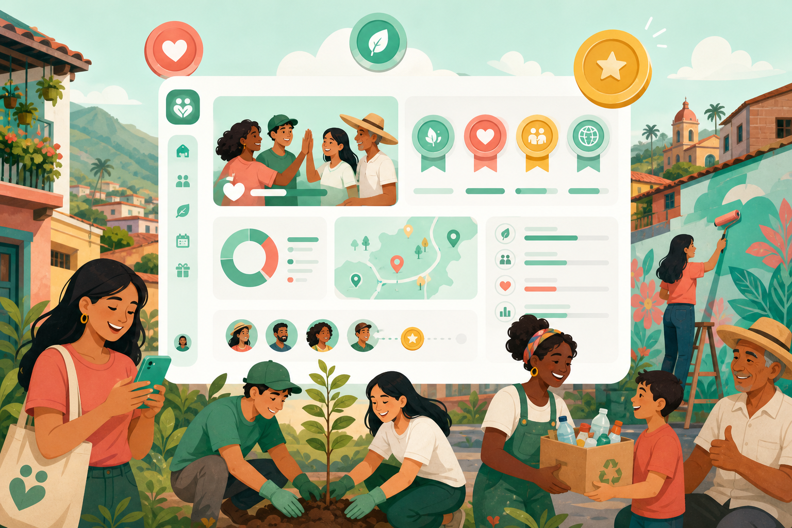

Juntos resolvemos los problemas de nuestro barrio
VeciIA reconoce tu participación, beneficia a Colombia y crece desde Cartagena hacia toda Latinoamérica.

Lo que hace la comunidad ahora mismo
Reportes, soluciones y acciones de vecinos en Cartagena.
Reportes y problemas resueltos
Comparativa en tiempo real y contacto directo con quien reportó o resolvió cada caso.
Publica un reporte en el mapa con tu WhatsApp para que otros vecinos te contacten.
Publica en el mapa. Solo tú confirmas quién resolvió tu problema y se genera la constancia.
Barrios con más reportes
La IA identifica dónde se concentran los problemas.
Ver mapa de calor →Ranking de impacto
Los vecinos más activos de Cartagena.
Cada usuario obtiene un Índice de Impacto Social
Si ayudas a resolver problemas en tu comunidad, VeciIA te reconoce y recompensa tu participación.
- ✓ Ganas puntos por cada problema reportado o resuelto
- ✓ Obtienes reconocimientos visibles en tu perfil
- ✓ Empresas pueden ofrecer descuentos o beneficios a los ciudadanos más activos
Una herramienta pensada para nuestras comunidades
Comunidades más organizadas
Toda la información en un solo lugar, accesible para todos.
Soluciones más rápidas
Menos tiempo perdido buscando a quién contactar.
Menos dependencia de WhatsApp
Adiós a los mensajes que se pierden en grupos caóticos.
Mayor participación ciudadana
Incentivos que motivan a más vecinos a involucrarse.
De Cartagena a toda Latinoamérica
Podría empezar en Cartagena y luego expandirse a toda Colombia y Latinoamérica. La clave es que no sería una red social, sino una red de solución de problemas comunitarios en tiempo real, algo que hoy no existe de forma masiva y bien integrada.